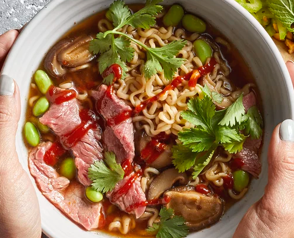

Spicy Beef Ramen

Ingredients:
- 1 (3 ounce) package beef-flavored ramen noodles
- 1 cup thinly sliced shiitake mushrooms
- ½ cup frozen shelled edamame
- 1 tablespoon reduced-sodium soy sauce
- 2 teaspoons Sriracha sauce, or more to taste
- 1 (4 ounce) beef top sirloin, thinly sliced
- 1 tablespoon chopped fresh cilantro, or to taste
How to make it:
- Cook ramen in a saucepan according to package directions.
- In the last two minutes of cooking, add Mushrooms, Edamame, Soy Sauce and Siracha.
- In the last minute of cooking, add Steak.
- Once done, Top with Cilantro and Sriracha Sauce.
Back to Homepage